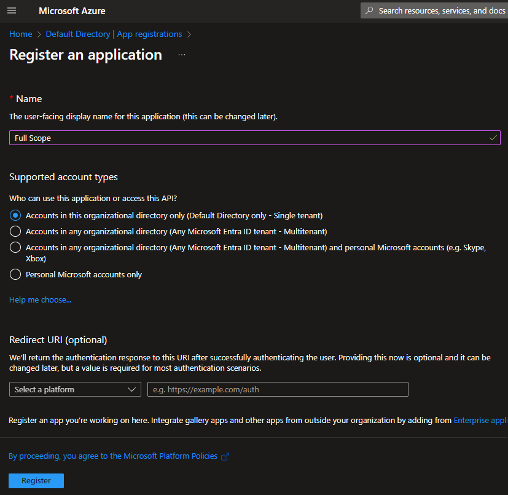
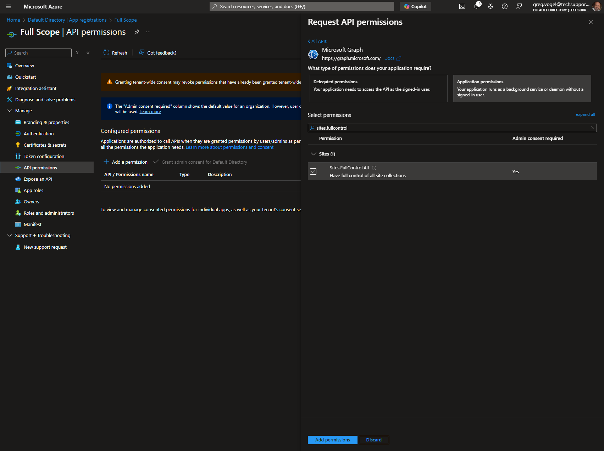
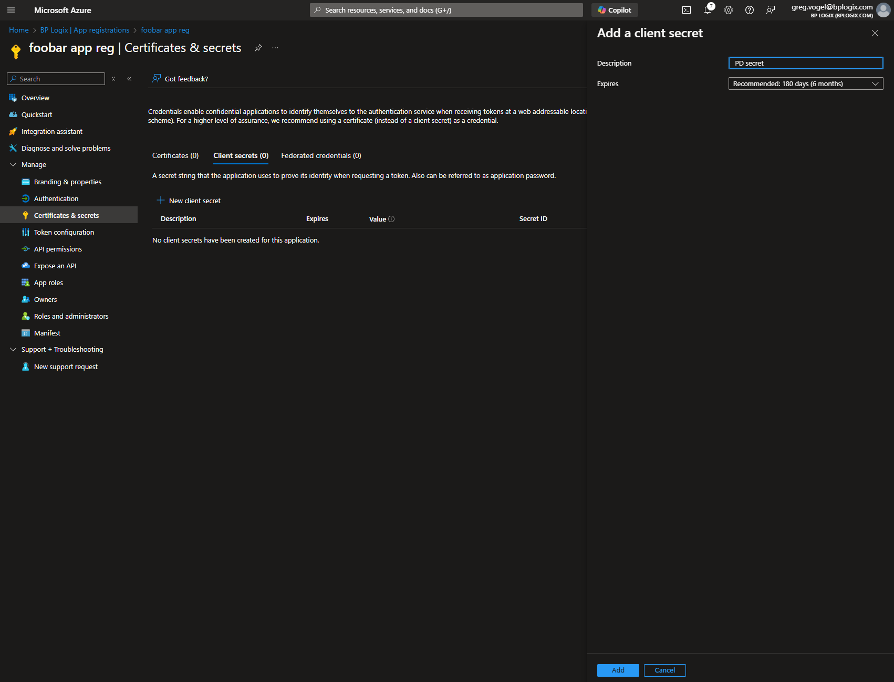

A PDF file for end-to-end Azure/Entra configuration for all Process Director features can be found here: Configuring Azure For Process Director (PDF Download)
A PDF file for end-to-end Azure/Entra configuration for all Process Director features can be found here: Configuring Azure For Process Director (PDF Download)
A PDF file for end-to-end Azure/Entra configuration for all Process Director features can be found here: Configuring Azure For Process Director (PDF Download)
 This topic discusses a product feature in active development, and is subject to change at any time.
This topic discusses a product feature in active development, and is subject to change at any time.
When fully configured, M365 CDA will access a single, specified SharePoint site. In order to create this configuration, you'll need to provide a mechanism to isolate that site. A "Full Scope" application registration in Azure provides this isolation mechanism, which we'll use to create the site-level application later.
The official Azure/Entra proprietary term for creating the entity we're about to configure is Application (App) Registration, and that's the term we'll use in this documentation. Your personnel who have IT/IS specialties may refer to this Azure/Entra entity by different names. Most commonly, the generic term Service Principal is likely familiar, since it's a generic term that can be used for other cloud providers like AWS and Google Cloud, and is the term commonly used in Internet Security.
To create the "Full Scope" App Registration, first navigate to the Microsoft Entra ID page of your Azure installation.

From this page, use the navigation bar on the left side of the screen to navigate to the App Registrations page. From this page, click the New registration button that appears at the top of the page.

On the Register an application page, Set the Name of the new application as “Full Scope” (or a suitable name of your choosing but note we refer to it as “Full Scope” in this document). Typically, the default setting of the Supported Account Types property is "Accounts in this organizational directory only" is satisfactory and provides optimal security.

You can click the Register button at the bottom of the page to register the new application. Once registered, you’ll see the Overview page for the new application. Note the Application (client) ID and Directory (tenant) ID properties. These values will be needed later when we grant access to the “Site” level App Registration. They are easily copied when hovering the mouse over each value.

Next, you'll need to click the API Permissions menu item from the left sidebar of the page to open the API Permissions page. You'll need to edit some of the default permissions for this application.
If the User.Read permission is shown, you'll need to delete it.
Next, you'll need to click the Add a permission button to open its dialog box. Select Microsoft Graph, then Application Permissions. Once in the Application Permissions section, you'll need to add the Sites.FullControl.All permission to the application.

Once you've done so, click the Add Permissions button at the bottom of the page. Once you do, you'll need to click the Grant admin consent for <Enterprise name> button to confirm the change.
Now that the permissions have been changed, you'll need to create the Client Secret property for the new application. To do so, click the Certificates & secrets navigation menu item on the left sidebar of the page. When the page opens, click the New Client Secret button to create a new client secret. You'll need to provide a Name for the new item. Once you do so, click the Add button.
Once you click the Add button, you are presented with the secret once and only once. Do not navigate away or refresh the page.

Click the Copy to clipboard icon and then paste the secret into a secure document or file. Keep the file secret, and store it in a safe and secure place, preferably one that is backed up securely. Losing this value will make it impossible to use the "Full Scope" app to create the site isolation for the M365 CDA integration.
Keep the values for the Client Secret as well as the Client ID and Tenant ID properties for the “Full Scope” App Registration on hand. We'll need them to create and configure the "site" level App Registration, which is the next step in the process.